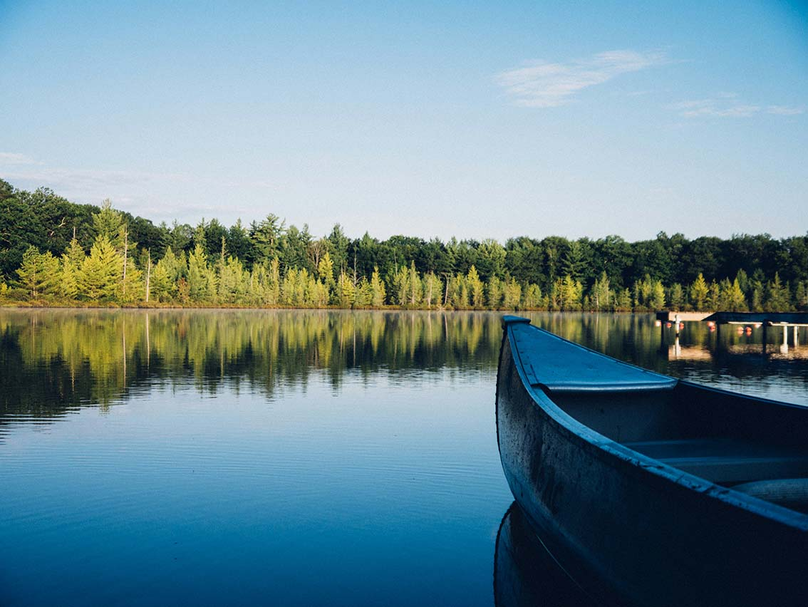
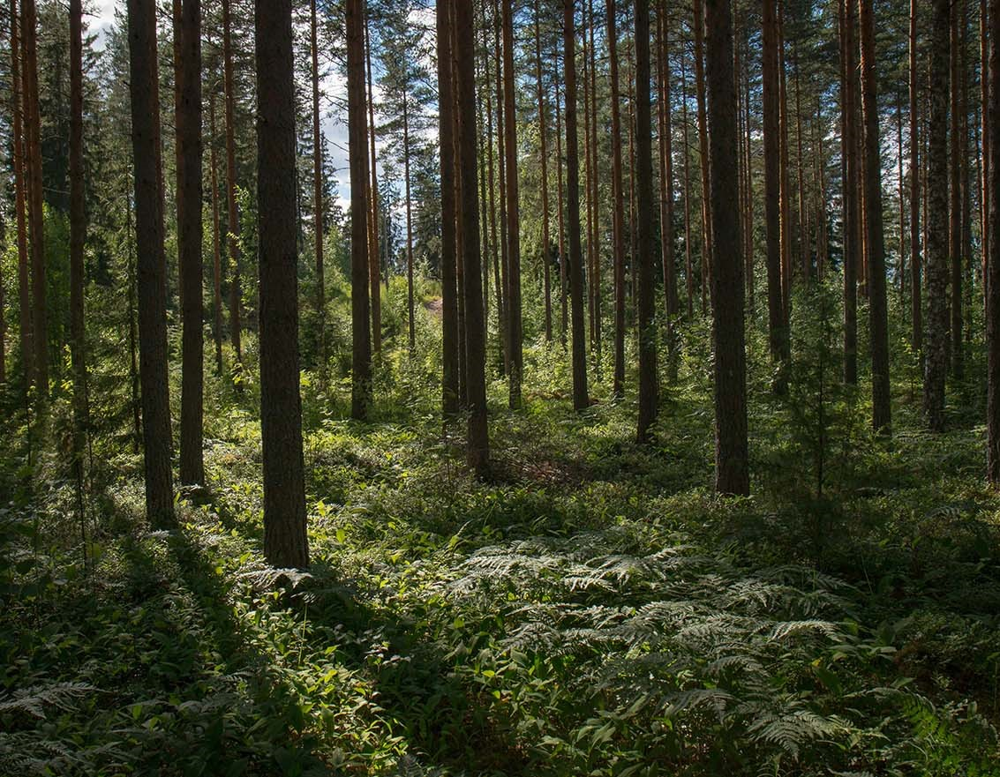
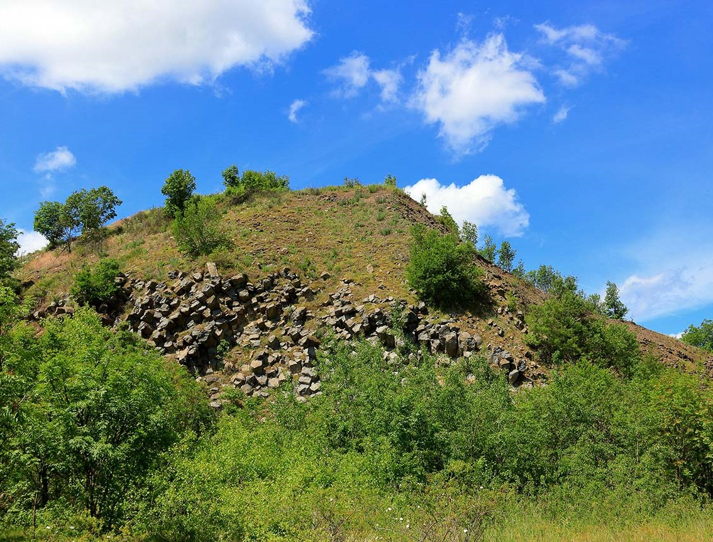
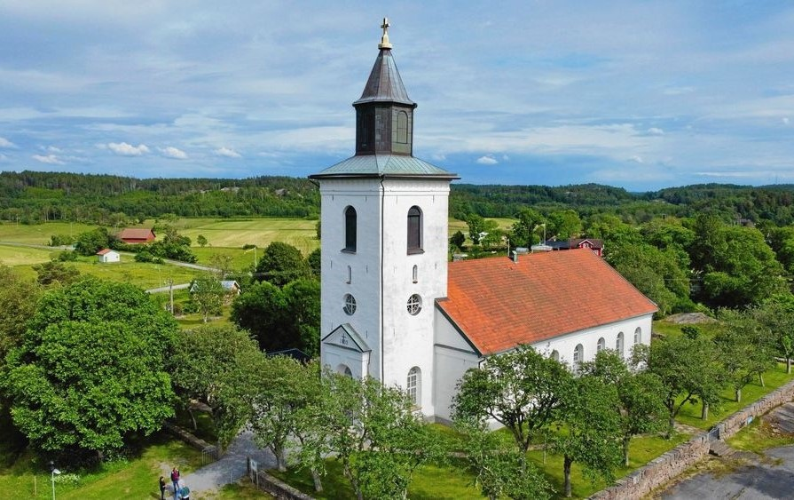

Hålanda är en naturskön plats, känd för sin vackra natur, med berg, sjöar och flera naturreservat som lockar besökare året runt. Området bjuder på fina vandringsleder och ett rikt djurliv, perfekt för den som uppskattar friluftsliv och lugna omgivningar. Här kan man njuta av stillheten vid spegelblanka sjöar eller utforska de kuperade skogarna som ger en känsla av vildmark nära civilisationen.

Hålsjön
Badplats:
check
Fiske:
close
Busshållplats:
check
Toalett:
check

Verleskogen
Badplats:
check
Fiske:
close
Busshållplats:
check
Toalett:
check

Rapungaberget
Busshållplats: check
Märkt led: check
Klättring: close

Hålanda kyrka
Busshållplats: check
Toalett: check
Parkering: check